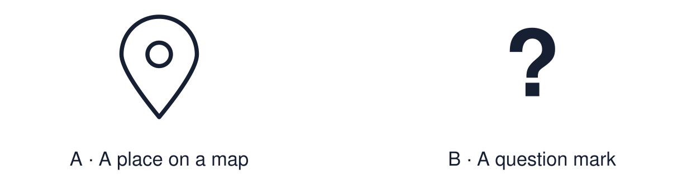

Arrival choices
Previous lesson reminder:

Start with 1 and 2. Try 3 and 4 when ready. Reading and exact scribing are available.
1 Give one purpose of prayer.
Support: Use the reminder strip or talk it through with an adult.
2 Which meaning fits pilgrimage?
Support: Choose: A journey to a sacred place for religious reasons OR Special and holy to people of a faith.
3 Give one reason pilgrimage may matter to a believer.
Support: Use the model evidence anchor B or read one relevant card together.
4 Do all Christians go on pilgrimage?
Support: Give a reason when ready.
Stretch: use a precise example or explain which detail supports your answer.
Evidence cards
Read, point or listen. Keep the source label with any detail you use.
A Hajj
Hajj is a pilgrimage to Makkah and one of the Five Pillars of Islam. It is a duty once in a lifetime for Muslims who are physically and financially able. Ihram is a sacred state. Men commonly wear two plain white cloths; women wear modest clothing. Pilgrims circle the Ka‘bah.
Source: Authored RE summary
Limit: Belief and practice vary between individuals and communities.
B Why Hajj matters
Practices during Hajj can express equality and shared commitment before God. Pilgrims have different personal experiences; clothing alone does not tell us what an individual believes.
Source: Authored RE summary
Limit: Pilgrims describe their experiences differently.
C Lourdes
Lourdes in France is a Catholic pilgrimage site. In 1858 a girl called Bernadette reported visions of Mary there. Pilgrims pray, join processions and many bathe in or collect the spring water.
Source: Authored RE summary
Limit: Christians differ on pilgrimage. Many never go on one.
D Place → action → meaning
Where is it? What do pilgrims do? What does it mean to them?
Source: Authored classroom resource
Limit: Three questions are a starting point.
Shared investigation
1. Inspect the cards, then match each detail to its pilgrimage.
2. Trace place → action → meaning for one of them.
Work with a partner or adult, or use your own table. One person suggests; the other checks the evidence. Swap after one turn. Passing is allowed.
Move or match the cards
| Cards to use |
|---|
| Simple white clothing showing equality |
| Collecting spring water |
| Circling the Ka‘bah |
Possible labels: Hajj / Lourdes
Support: Use the glossary and one chunk of evidence. Plan the claim and supporting detail before explaining.
Further challenge: Explain why a journey might change a believer more than worship at home.
Supported independent task
Complete this route only. Explain why a sacred place or pilgrimage can be important to a believer.
1. Choose one pilgrimage and find it on the map.
2. Label one action pilgrims do.
3. Say why it matters, using the sentence frame.
Support: Use the glossary and one chunk of evidence. Plan the claim and supporting detail before explaining. Complete the organiser one space at a time. Pilgrims travel to ___ where they ___. This matters because ___.
An adult may read or scribe your exact response. They should not choose the answer.
Standard independent task
Complete this route only. Explain why a sacred place or pilgrimage can be important to a believer.
1. Create an information card: where and what happens.
2. Explain why it matters to a believer.
3. Include one key term.
Support: Pilgrims travel to ___ where they ___. This matters because ___.
Check the required evidence and revise one detail.
Stretch independent task
Complete this route only. Explain why a sacred place or pilgrimage can be important to a believer.
1. Create an information card for one pilgrimage.
2. Compare it with the second in two sentences.
3. Explain what makes a place sacred.
Support: Choose the evidence independently. Use the frame only if it helps.
Explain why a journey might change a believer more than worship at home.
Exit ticket
Choose a response mode. You may give your answers privately to an adult.
Give one reason pilgrimage may matter to a believer.
Do all Christians go on pilgrimage?
Support: Pilgrims travel to ___ where they ___. This matters because ___.
Further challenge: Explain why a journey might change a believer more than worship at home.